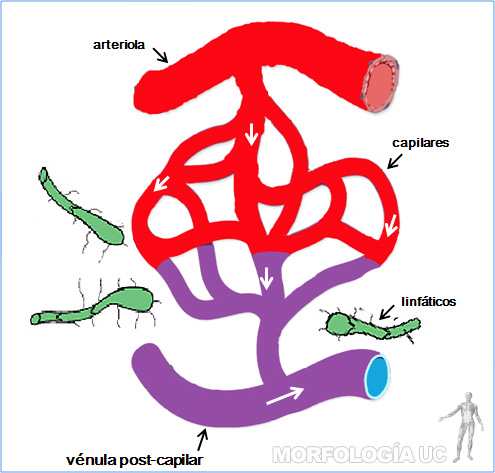

-
Fig. 5-1: Esquema del sistema circulatorio que muestra los circuitos mayor, menor y el sistema porta. Los colores indican tipo de sangre que conducen los vasos.
Rojo= sangre oxigenada.
Azul= sangre desoxigenada.
- 1= atrio derecho;
- 2= ventrículo derecho;
- 3= atrio izquierdo;
- 4= ventrículo izquierdo;
- 5= tronco pulmonar;
- 6= aorta;
- 7= arterias pulmonares;
- 8= pulmón;
- 9= ramas del arco aórtico que irrigan la porción superior del cuerpo (arterias carótidas y subclavias);
- 10= vena cava superior;
- 11= vena cava inferior;
- 12= arteria hepática;
- 13= ramos viscerales de la aorta abdominal (tronco celíaco y arteria mesentéricas);
- 14= capilares hepáticos;
- 15= venas hepáticas;
- 16= capilares de la porción inferior del cuerpo;
- 17= capilares de la porción superior del cuerpo;
- 18= capilares pulmonares.
-
Fig. 5-2: Disección de tórax que muestra la disposición del corazón con sus caras esternocostal (4+5) y diafragmática (d). El pericardio fibroso y la hoja parietal del pericardio seroso están rebatidas para exponer al corazón.
- 1= vena cava superior;
- 2= aorta;
- 3= tronco pulmonar;
- 4= ventrículo izquierdo y;
- 5= ventrículo derecho, separados por el surco interventricular anterior (línea segmentada);
- 6= aurícula derecha;
- 7= diafragma;
- 8= pericardio seroso parietal;
- 9= ligamento freno-pericárdico;
- Cabeza de flecha= surco coronario.
-
Fig. 5-3: Esquema que muestra las cavidades cardíacas y los vasos que llegan y salen del corazón.
Rojo= sangre oxigenada.
Azul= sangre desoxigenada.
- 1= arco aórtico;
- 2= arterias pulmonares;
- 3= tronco pulmonar;
- 4= vena cava superior;
- 5= venas pulmonares;
- 6= valva atrio-ventricular derecha (tricúspide);
- 7= valva pulmonar;
- 8= valva aórtica;
- 9= valva atrio-ventricular izquierda (bicúspide o mitral);
- 10= septum interventricular;
- 11= endocardio;
- 12= miocardio;
- 13= epicardio o pericardio seroso visceral;
- 14= arteria braquiocefálica;
- 15= arteria carótida común izquierda;
- 16= arteria subclavia izquierda;
- 17= vena cava inferior.
-
Fig. 5-4: Corazón humano abierto por el ventrículo derecho, se observan las trabéculas carnosas que tornan irregular su superficie interna.
- t= superficie ventricular de la válvula atrio-ventricular derecha (tricúspide);
- p= músculo papilar anterior;
- v= válvula pulmonar;
- tp= tronco pulmonar.
-
Fig. 5-5: Corazón humano abierto por las cavidades izquierdas.
- ai= atrio izquierdo;
- v= valvas de la válvula atrio-ventricular izquierda (bicúspide o mitral);
- p= músculos papilares;
- s= septum interventricular;
- Cabezas de flechas= desembocadura de las venas pulmonares.
-
Fig. 5-6: Disección de corazón humano que muestra el plano valvular.
- 1= trígono fibroso izquierdo;
- 2 y 3= válvulas anterior y posterior, respectivamente, de la valva atrio-ventricular izquierda;
- 4, 5 y 6= válvulas: izquierda, derecha y posterior, en ese orden, de la valva aórtica;
- 7, 8 y 9= válvulas: anterior, septal y posterior, respectivamente, de la valva atrio-ventricular derecha;
- 10= trígono fibroso derecho;
- 11= porción mitro-aórtica del esqueleto fibroso del corazón;
- *= porción inicial de las arterias coronarias;
- Cabezas de flechas= valvas de la válvula pulmonar.
-

Fig. 5-7: Esquema que muestra la irrigación de las vísceras digestivas abdominales.
- 1= arteria gástrica izquierda;
- 2= arteria esplénica;
- 3= arteria aorta abdominal;
- 4= tronco celíaco;
- 5= arteria hepática propia;
- 6= arteria gastroduodenal;
- 7= arteria mesentérica superior;
- 8= curvatura mayor del estómago;
- 9= arteria mesentérica inferior;
- 10= arteria ilíaca común;
- 11= arteria ilíaca interna;
- 12= arteria rectal media.
-
Fig. 5-8: Disección de la región supramesocólica, el estómago está levantado con el separador para ver la disposición de las ramas del tronco celíaco.
- e= arteria esplénica;
- g= arteria gástrica izquierda;
- h= arteria hepática común.
-
Fig. 5-9: Disección de la región inframesocólica que muestra la disposición de los vasos mesentéricos superiores.
Flecha roja= arteria. Flecha azul= vena, a la derecha de la arteria.
-
Fig. 5-10: Disección de la región inframesocólica que muestra la disposición de los vasos mesentéricos inferiores.
Flecha roja= arteria, originándose desde la aorta. Flecha azul= vena, a la izquierda de la arteria.
-
Fig. 5-11a: Disección de la región pélvica, que muestra la situación de los vasos ilíacos.
- c= arteria ilíaca común;
- e= arteria ilíaca externa;
- i= arteria ilíaca interna.
-
Fig. 5-11b: Disección de la región pélvica, que muestra las ramas de la arteria ilíaca interna.
- 1= arteria sacra lateral;
- 2= arteria glútea superior;
- 3= arteria glútea inferior;
- 4= arteria rectal media;
- 5= arteria pudenda;
- 6= arteria obturatriz;
- 7= arteria vesical superior.
-
Fig. 5-12: Esquema que muestra la disposición de las ramas de la arteria braquiocefálica.
- 1= arteria vertebral;
- 2= arteria subclavia;
- 3= arteria carótida interna;
- 4= arteria carótida externa;
- 5= arteria carótida común;
- 6= arteria braquiocefálica.
-
Fig. 5-13: Disección de la región axilar, que muestra la situación de la arteria.
Flecha roja= arteria axilar.
Flecha azul= vena axilar.
Flechas amarillas= ramos del plexo braquial.
-
Fig. 5-14: Esquema que muestra la distribución de las arterias del miembro superior.
- 1= arteria carótida común derecha;
- 2= arteria braquiocefálica;
- 3= arteria subclavia derecha;
- 4= arteria braquial;
- 5= arteria axilar;
- 6= arteria ulnar (cubital);
- 7= arteria radial.
-
Fig. 5-15: Disección del triángulo femoral.
- af= arteria femoral;
- f= vena femoral;
- s= vena safena mayor;
- nf= nervio femoral;
- lf= nodo linfático inguinal superficial;
- pi= músculo psoas-ilíaco;
- al= músculo aductor largo;
- ms= músculo sartorio.
-
Fig. 5-16: Disección de la región poplítea que muestra la disposición de los elementos neurovasculares.
Flecha roja= arteria poplítea.
Flecha azul= vena poplítea.
Flecha amarilla= nervio ciático.
-
Fig. 5-17: Esquema que muestra la distribución de las arterias del miembro inferior.
- 10= arteria aorta abdominal;
- 11= arteria ilíaca común;
- 12= arteria ilíaca interna;
- 13= arteria ilíaca externa;
- 14= arteria femoral;
- 7= arteria pedia.
-
Fig. 5-18: Disección de la región cervical que muestra la situación de las arterias carótida común (cc), interna (ci) y externa (ce).
-
Fig. 5-19: Preparación de la región facial que muestra el trayecto de la arteria facial (af), vena facial (vf) y del nervio facial (nf).
-
Fig. 5-20: Disección de la raíz del cuello, lado izquierdo.
- cc= arteria carótida común;
- as= arteria subclavia;
- tc= tronco tirocervical, con sus ramas: tiroidea inferior (*) y cervical transversa (**);
- yi= vena yugular interna;
- sc= vena subclavia;
- vbc= vena braquiocefálica izquierda.
-
Fig. 5-21: Esquema que muestra la distribución de las venas del miembro superior.
- 8= vena braquiocefálica;
- 9= vena subclavia;
- 10= vena axilar;
- 11= vena braquial;
- 12= vena cefálica;
- 13= vena basílica;
- 14 y 15= venas del antebrazo.
-
Fig. 5-22: Esquema que muestra la distribución de las venas superficiales del antebrazo derecho, vista anterior.
- 1= vena cefálica;
- 2= vena mediana cefálica;
- 3= vena basílica;
- 4= vena mediana basílica;
- 5= vena mediana.
-
Fig. 5-23: Esquema que muestra el retorno venoso de cabeza y cuello.
- 7= vena vertebral;
- 8= vena yugular externa;
- 9= vena subclavia;
- 10= vena axilar;
- 12= vena braquiocefálica derecha;
- 13= vena cava superior;
- 14= vena yugular interna;
- En puntos segmentados (15) aparecen señalados los senos venosos de la duramadre.
-
Fig. 5-24: Disección del triángulo carotideo, con el músculo esternocleidomastoideo rechazado, que muestra el paquete neurovascular del cuello.
- yi= vena yugular interna;
- tf= tronco venoso tirolinguofacial, que drena en la yugular interna;
- cc= arteria carótida común;
- nv= nervio vago.
-
Fig. 5-25: Disección del mediastino visto por el lado derecho.
- vcs= porción terminal de la vena cava superior;
- va= vena ácigos desembocando en la cava superior;
- vp= venas pulmonares.
-
Fig. 5-25b: Fotografía del mediastino posterior, lado derecho.
- 1= ducto torácico;
- 2= aorta torácica;
- 3= esófago;
- 4= vena ácigos;
- 5= bronquio derecho;
- 6= arteria pulmonar derecha;
- 7= vena pulmonar derecha superior;
- 8= nervio esplácnico mayor;
- 9= tronco simpático torácico;
- 10= pleura parietal costa.
-
Fig. 5-26: Esquema que resume el drenaje venoso del miembro inferior.
- 1= vena cava inferior;
- 2= vena ilíaca común;
- 3= vena ilíaca interna;
- 4= vena ilíaca externa;
- 5= vena femoral;
- 6= vena safena mayor;
- 8= vena poplítea.
-
Fig. 5-27: Disección de la zona posterior de la pierna que muestra el trayecto de la vena safena menor.
Flecha verde= marca situación del maleolo lateral.
- 1= vena safena menor;
- 2= vena poplitea;
- 3= arteria poplitea;
- 4= nervio ciático;
- 5= nervio tibial;
- 6= nervio fibular.
-
Fig. 5-28: Esquema que resume el drenaje venoso de las vísceras digestivas abdominales y pélvicas. Las flechas indican el sentido del flujo de la sangre.
- 1= vena cava inferior;
- 2= diafragma;
- 3= puntos de anastomosis porto-sistémicas;
- 4= hígado;
- 5= venas hepáticas (supra hepáticas);
- 6= vena porta hepática;
- 7= estómago;
- 8= vena esplénica;
- 9= vena gastro omental izquierda;
- 10= bazo;
- 11= venas pancreáticas;
- 12= páncreas;
- 13= intestino delgado;
- 14= vena mesentérica superior;
- 15= vena mesentérica inferior;
- 16= vena ilíaca común;
- 17= vena rectal superior;
- 18= colon descendente;
- 19= recto.
-
Fig. 5-29: Vista posterior de un vaciado en acrílico coloreado de los vasos que irrigan al corazón.
- aa= aorta ascendente;
- ci= arteria coronaria izquierda;
- cd= arteria coronaria derecha;
- sc= seno coronario;
- cm= vena cardíaca mayor;
- m= vena cardíaca media.
-
Fig. 5-30: Esquema que resume la circulación fetal. Los colores rojo y azul indica mayor y saturación de oxigeno, respectivamente. Las flechas indican el sentido del flujo de la sangre.
- 1= placenta;
- 2= arteria umbilicales;
- 3= vena umbilical;
- 4= vena porta hepática;
- 5= conducto venoso (de Arancio);
- 6= vena cava inferior;
- 7= foramen oval;
- 8= conducto arterioso (de Botal).
-
Fig. 5-31: Esquema que resume el drenaje linfático del cuerpo.
- 1= cisterna del quilo (de Pecquet);
- 2= tronco linfático intestinal;
- 3= tronco linfático lumbar;
- 4= ducto torácico;
- 5= ducto linfático derecho (gran vena linfática);
- 6= vena yugular interna;
- 7= vena subclavia;
- 8= vena braquiocefálica;
- 9= vena cava superior;
- 10= nodos linfáticos cervicales;
- 11= nodos linfáticos axilares;
- 12= nodos linfáticos inguinales.
-
Fig. 5-32: Estructura de la pared de una arteria de conducción.
- A) corresponde a un corte perpendicular por la pared de la aorta, en cuya túnica media se observan las láminas elásticas teñidas de color negro;
- B) corte perpendicular que muestra la túnica intima y parte de la túnica media, destacando las células musculares lisas entre las láminas elásticas teñidas de color rosado;
- C) ilustra en un esquema la organización de estas unidades lamelares formadas por láminas elásticas fenestradas y células musculares lisas rodeadas de matriz extracelular.
-
Fig. 5-33: Estructura de la pared de una arteria de distribución.
- A) esquema de las capas que forman la pared de una arteria muscular;
- B) corte transversal, teñido con H.E, que muestra la túnica intima y la túnica media formada por músculo liso;
- C) en este corte longitudinal por la pared se observa la gruesa lámina elástica interna y la estructura fibrilar de la elástica externa, teñidas de color negro.
-
Fig. 5-34: Estructura de la pared de una arteria de resistencia.
- A) esquema de las capas que forman la pared de una arteriola;
- B) corte transversal teñido con H.E., que muestra la túnica media formada por 2 capas de músculo liso;
- C) en este corte se observa la lámina elástica interna, teñidas de color negro.
-

Fig. 5-35: Esquema que ilustra los vasos que participan en la microcirculación.
-
Fig. 5-36: Estructura de los vasos de intercambio.
- A) esquema de la estructura de un capilar con su endotelio de pared continua, con prolongaciones de pericitas rodeando al endotelio;
- B) esquema de la estructura de un capilar fenestrado;
- C) paquete vascular, teñido con H.E en que se observa el corte transversal por dos capilares;
- D) corte transversal por una vénula pericítica en el paquete vascular;
- E) esquema de la estructura de la pared de una vénula pericítica, cuyo endotelio está asociado a prolongaciones de pericitos.
-
Fig. 5-37: Estructura de los vasos de capacitancia.
- A) paquete vascular teñido con H.E en que se observan una vénula muscular, con fibras musculares lisas asociadas al endotelio y una vena muscular de pequeño diámetro pequeña;
- B) Corte transversal por la pared de una vena mediana, cuya túnica media tiene varias capas de musculo, mezcladas con fibras colágenas (H.E);
- C) paquete vascular, teñido con H.E en que se compara la estructura de una vena median con la arteria muscular que la acompaña;
- D) zona similar a la anterior pero con tinción de color negra para las fibras elásticas, que forman la elástica interna y abundan en la adventicia de la arteria y son escasa en la vena.
-
Fig. 5-38: Médula ósea hematopoyética y células sanguíneas.
- A) corte por médula ósea roja mostrando senos venosos y el tejido conjuntivo reticular que contiene a las células de la serie hematopoyética (H.E);
- B) elementos figurados en un frotis de sangre (tinción de Giemsa).
en 1 se observan eritrocitos, una plaqueta, un linfocitos y un monocito;
en 2 eritrocitos y un granulocito neutrófilo;
en 3 eritrocitos y un granulocito eosinófilo;
y en 4 eritrocitos y un granulocito basófilo.
-
Fig. 5-39: Vista anterior de una disección de tórax en un niño de 2 años de edad, en el mediastino superior se aprecia la situación del timo con sus dos lóbulos.
- co= corazón;
- pd= pulmón derecho;
- pi= pulmón izquierdo;
- ai= aurícula izquierda;
- p= pericardio abierto;
- d= diafragma.
-
Fig. 5-40: Estructura del Timo.
- A) imagen a microscopio de luz de un lóbulo del timo de un niño. En la corteza se distinguen los lobulillos, están delimitados por las trabéculas conjuntivas;
- B) esquema que ilustra la estructura celular de los lobulillos tímicos y su participación en la formación de los linfocitos T.
-
Fig. 5-41: Estructura del bazo.
- A) esquema que muestra la irrigación del bazo, y la disposición de la pulpa blanca y la pulpa roja en relación a sus vasos sanguíneos;
- B) corte por bazo, teñido con H.E. en que se observa un corte transversal por el tejido linfo-reticular que rodea a la arteria de la pulpa blanca;
- C) en este corte por bazo se observa los senos marginales que rodea a la zona marginal de la pulpa blanca.
-
Fig. 5-42: Estructura de un linfonodo (ganglio linfático).
- A) corte través de un linfonodo, teñido con H.E. destacan los nódulos o folículos linfático presente en su corteza subcapsular, y la zona del hilio hacia donde confluyen los senos medulares;
- B) esquema en que se muestra, en la mitad superior, la circulación de la linfa, y en la mitad inferior, la circulación de la sangre en el linfonodo.
-
Fig. 5-43: Estructura histológica de un linfonodo.
- A) corte través de un linfonodo, teñido con H.E., en el que se muestra: la cápsula conjuntiva, el seno subcapsular, la corteza subcapsular con los nódulos linfáticos; la para corteza donde se ubican las vénulas de endotelio alto; y la médula con sus cordones medulares y senos medulares que desembocan en el vaso linfático eferente;
- B) corte a través de un nódulo linfático con centro germinativo;
- C) corte a través de senos medulares que rodean cordones medulares, en los que destaca la presencia de macrófagos(m) y células plasmáticas (p).
-
Fig. 5-44: Disección de los triángulos carotideo y digástrico que muestra la disposición de los nodos linfáticos.
- yi= vena yugular interna;
- tf= tronco venoso tirolinguofacial;
- cc= arteria carótida común;
- n= nodos cervicales profundos superiores;
- n*= nodos submandibulares.